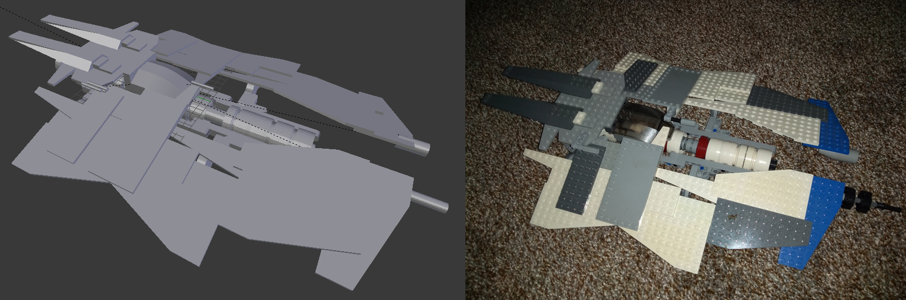
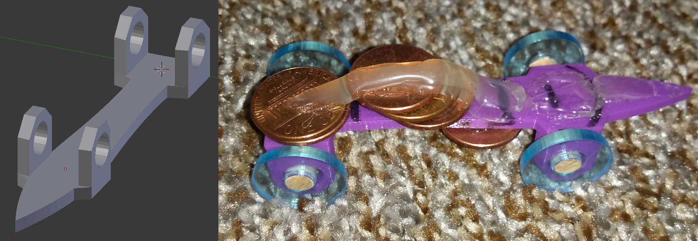
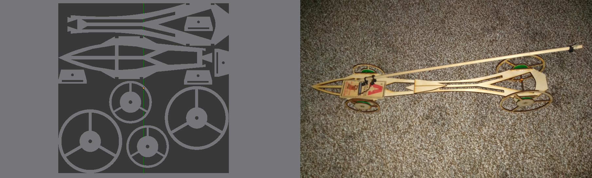
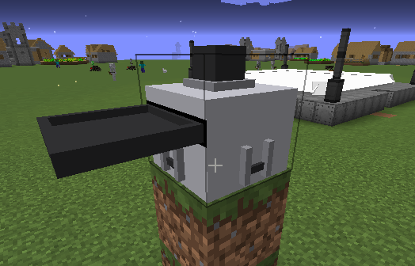
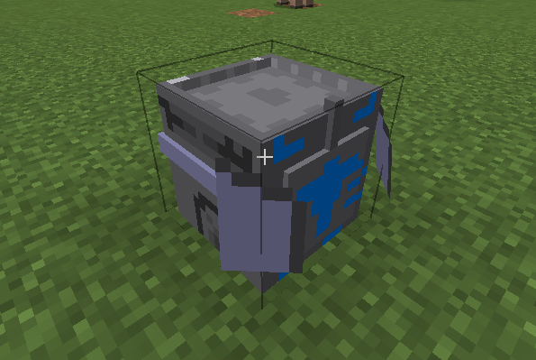
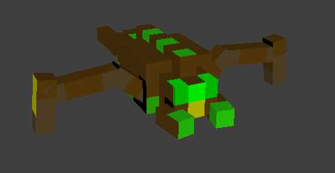
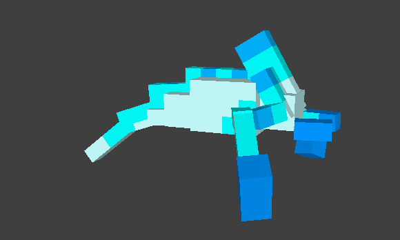
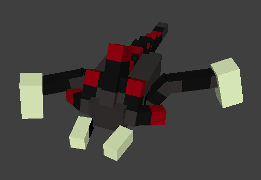
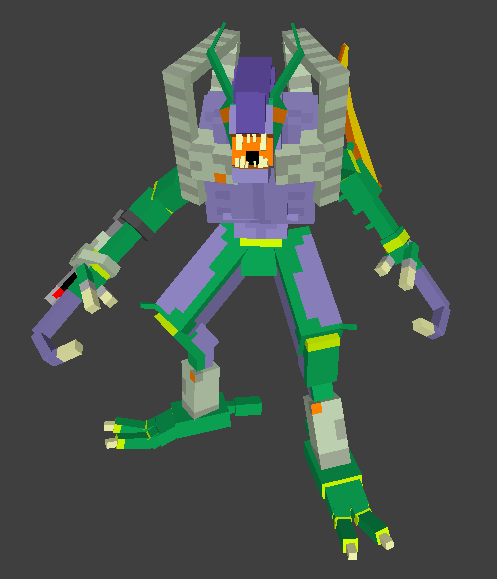
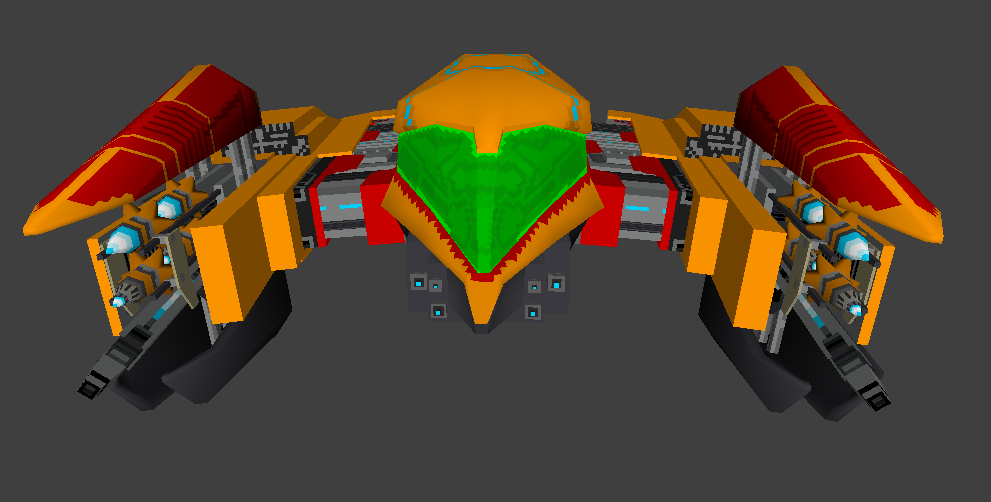

Horizons of Avalon was to be a PC FPS Metroidvania taking heavy inspiration from the Metroid series itself. I began development sometime in 2016, but life got in the way and I never finished the demo. A few years later, my PC became corrupted, and all files for the game were lost. I had drew and designed several concepts for levels, such as a jungle that had consumed limestone ruins as a start level. This video of the untextured weapon for the player is the only file I was able to recover. The game was being built in Blender, pre-2.8 and using the python-based Blender Game Engine.
_ _ _ _ _ _ _
'Paladin' Lego Ship

The Paladin, Lego on the right and the slightly corrupted, textureless Blender recreation on the left
I love messing around with Legos, and sometimes I get great inspiration for a computer game idea when building. This spaceship, I named the 'Paladin', started out as a Lego build. I wanted to use it in Horizons of Avalon, so I took measurements and—using the Lego 'stud' as a base unit—built an exact replica in Blender as a 3D model. I then simplified some of the artifacts from it being built in Lego, and I began testing with it as the player's vessel in Horizons of Avalon. Later, my hard drive became corrupted, and most of Horizons of Avalon and the 'Paladin' ship's various incarnations were lost.
_ _ _ _ _ _ _
Three Musketeers Explorable Scene
Alexandre Dumas' Three Musketeers is one of my favorite book series. I negotiated with my 8th grade teacher and chose to build my idea of one of the scenes from the first book as my book report. In this scene, the Musketeers are locked down in a ruined bastion as the enemy pours in. After having a brief lunch, they fight off the forces from the decrepit structure. The whole scene was built from scratch by me using Blender. I rigged up a simple character script using the Blender Game Engine to explore the scene. I planned to add the people from the scene frozen in combat, but I bit off more than I could chew and the project was turned in as-is. Later, when my drive became corrupted, I lost the prettier finished version, so this less-nicely textured scene is all that remains.
_ _ _ _ _ _ _
Animal Farm Explorable Scene
Keeping with the trend, I bargained with my 10th grade English teacher to let me do an unorthodox book report. We were reading George Orwell's Animal Farm as a class, so I recreated a pivotal scene from the book in Blender. In the scene, the animals have overthrown their human rulers (the farmers) and begun building a windmill to get power to the farm. The human farmers from a neighboring farm seek to overtake the animal farm for it's good land, and attack the animals. They are beaten back, but as a finishing move, they plant dynamite in the newly finished windmill, and it explodes. In the scene, a simple camera move script allows the user to explore the semi-frozen scene.
_ _ _ _ _ _ _
Lasercut Clock
This is the lasercut clock frame, fully finished. Sadly, the original cutfile SVG was lost to corruption
As a class final project for my woodworking / tech class, we were all to design and lasercut a frame for a battery powered analog clock. I wanted a more fun-looking design, so I spent a few evening in Blender (treating it as CAD software) and designed this piece. After building in Blender, I converted it to an SVG and used Krita to correct artefacts that would mean the laser cutting a piece in half when it was not meant to. After cutting the pieces, I carefully wood-glued and clamped the clock until it was cured. Three years later, and the clock has survived moving between two houses without a scratch.
_ _ _ _ _ _ _
Penny Skates

Though covered in coins and plenty of hot-glue for weight, the unique and specific design of the skate car can be seen
As part of my shop-tech class talked about above, I designed a 'penny skate' car. You would glue a number of pennies or dimes to the 3D printed object and attach wheels to it. The goal was to have the fastest car of the class. My design took 13th in a class of 30-40. I build the car in Blender, using some educated guesses as to the optimal aerodynamic shape and where to remove weight. I converted it into a .stl and used the school 3D printer to build it.
_ _ _ _ _ _ _
Mousetrap Car

A requirement of this project was that the final cut fit within a 1' square. This design not only fit the reqs, but took the place of that year's record holder for distance
As the semester final for my shop-tech class, we worked in pairs to design mousetrap cars. The car would be lasercut from a 1' by 1' wooden board of .25 in thickness, and would be propelled with a store-bought mousetrap. We were allowed two design iterations, one to experiment and one to compete with the rest of the class. Me and my partner worked on several designs to minimize friction, weight, and to maximize the lever work ratio. The design we came up with was the best of the class (it traveled about 90'), but sadly did not beat the previous record holder from the last year's class.
_ _ _ _ _ _ _
Work for Metroid Cubed 4

This is the first submission I made for MC4; a mechanical press that allows the player to craft more complex armor and alloys

This is the second model I did for MC4. This is the second tier of press the player can make. It works faster and can do more complex tasks

This is the regular Parasite enemy, made after the same enemy from Metroid Prime

This is the Ice variation of the regular Parasite enemy

This is the Plated variation of the regular Parasite enemy

Here is the iconic Space Pirate (styled like the ones in Metroid Prime); one of the most recurring enemies of hunter Samus Aran

This is the Gunship I made for MC4, seen here with all weapons deployed and ready to fire
In my off time I work as the primary modeler-animator for a Minecraft mod called Metroid Cubed 4. The mod seeks to bring the magic of the entire Metroid franchise to Minecraft. So far, I have designed, modeled, textured, and animated two machines (alloy presses), four creatures (three Parasistes and the antagonist Space Pirate), and Samus' Gunship (ass seen in Metroid Prime 3). I work mainly in a program 'Minecraft Model Studio' (MCMS) built and updated by the mod owner. I also work in Blender for more complex parts of models and then export to MCMS to be worked into the project file.
DISCLAIMER: MC4 is a non-profit mod for Minecraft. We as its developers do not claim to own any part of Minecraft or Metroid, nor do we intend to make money off of our work on the mod. The source material is copyright Nintendo, and all models, items, and etcetera features present in the mod have been built from the ground up as part of the mod, using the Metroid franchise as a basis.
DiscordForjeon#9757Emailjonathancforsgren@gmail.comIndeedJohn Forsgren | Game Developer, Mod Developer